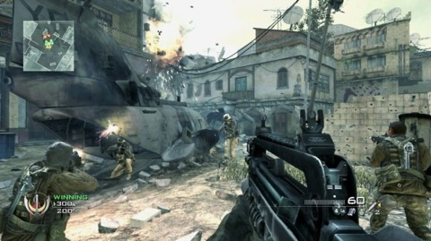

First-person shooter (FPS) is a video game genre centered around gun and other weapon-based combat in a first-person perspective. The player experiences the action through the eyes of the protagonist. The genre shares common traits with other shooter games, which in turn makes it fall under the heading action game.
Honorable Mention are Halo ,Doom, Call of Duty
These are some of the best first person shooter games ever created.
They have defined most of the modern fps games that we see today